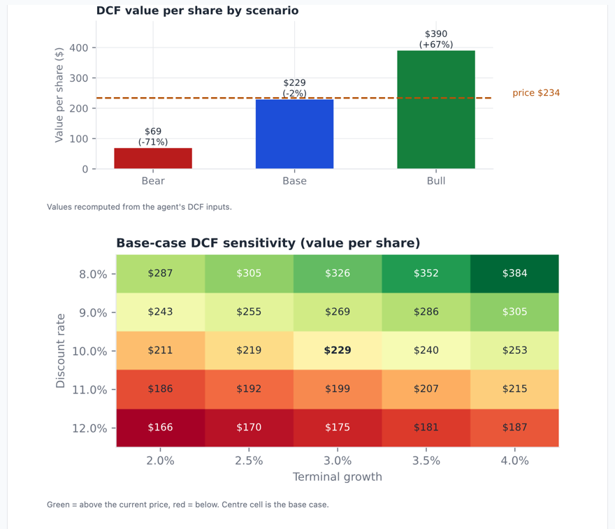

An autonomous AI agent that reads a company's SEC filings, researches it like a buy-side analyst, fact-checks its own work and writes a fund-style investment memo, in English and Spanish.
Given a stock ticker, the agent downloads the company's recent annual and quarterly reports, press releases, proxy statement and insider trades from the SEC (about 1,000 pages), then decides for itself what to research: 10 years of financials, competitors, analyst expectations, risks, executive pay and recent news. It values the company with a discounted cash flow (DCF) in bear, base and bull scenarios, forms a Buy / Hold / Sell view with a 12-month target, and explains where it disagrees with Wall Street. It then re-checks its own draft against the sources and corrects its mistakes before producing a styled PDF with six charts and EU-style legal disclosures.
| Company | Call | 12-month target | Tool calls | Cost | Self-corrections |
|---|---|---|---|---|---|
| NVIDIA (NVDA) | Hold | $255 (+9%) | 19 | $0.43 | 13 |
| Microsoft (MSFT) | Hold | $530 (+2%) | 23 | $0.52 | 17 |
| Amazon (AMZN) | Hold | $255 (+1%) | 23 | $0.49 | 10 |
| Apple (AAPL) | Sell | $290 (−13%) | 19 | $0.41 | 14 |
Each memo also has a Spanish version (about $0.13 each). An automatic number check confirmed that no financial figure changed in any of the four translations.
Professional equity research is slow and expensive. Before an analyst can form a view on a company, they read hundreds of pages of filings, rebuild a multi-year financial history, compare competitors, check what Wall Street already expects and build a valuation model. For one company that's days of work.
General-purpose AI chatbots look like a shortcut, but they have three weaknesses that make them unsuitable on their own:
Goal of the project: build an AI system that does the analyst's groundwork with real, sourced data, keeps every number verifiable, costs less than a dollar per company, and produces a memo in the format a fund would actually use.
The key idea: the AI is the brain, the tools are its hands. Claude, the AI model, plans the research and writes. Small, reliable Python functions ("tools") fetch data, search documents and do the math. Because the AI acts (it looks things up and checks them) rather than answering from memory, the system is an agent, not a chatbot.
| File | Role | What it does |
|---|---|---|
| filings.py | The librarian | Downloads SEC filings, searches them, builds the 10-year history from SEC XBRL data, summarizes insider trades, runs the DCF |
| data.py | Market data assistant | Prices, multiples, quarterly statements, analyst consensus and peers from Yahoo Finance |
| tools.py | Switchboard | The menu of tools Claude may use; routes each request to the right function |
| prompts.py | Job description | The analyst instructions and memo template ("never invent figures, cite every number…") |
| agent.py | Manager | Runs the conversation with Claude, executes tools, enforces the budget, triggers the fact-check |
| render.py / translate.py | Designer / translator | Charts, PDF, disclosures; Spanish translation with a number check |
| app.py / cli.py | Showroom / front door | The public web demo and the command (or double-click launcher) that starts a memo |
Only one file, agent.py, talks to the AI. Everything that must be reliable (downloading, calculating, formatting) is ordinary code.
A company is worth all the cash it will produce in the future, translated into today's money. The agent starts from free cash flow (cash generated minus capital spending), projects it year by year for 8–10 years, adds a terminal value for the years after, discounts everything back at 8–11%, adjusts for cash and debt, and divides by the number of shares. A simple illustration: a business producing €100 a year forever is worth €100 ÷ 10% = €1,000 to an investor wanting 10%, but only €500 to one wanting 20%. A higher required return means a lower value.
Because the future is uncertain, the DCF runs three times. For NVIDIA (price $234):
| Scenario | Assumption | Value per share | vs price |
|---|---|---|---|
| Bear | AI spending slows and cash flow falls | $69 | −71% |
| Base | Strong growth that gradually slows | $229 | −2% |
| Bull | Very strong growth for longer | $390 | +67% |
A sensitivity heatmap shows how much the value moves with the assumptions: from $166 at a 12% discount rate to $384 at 8%. One number is never enough.

Like valuing a flat by its price per square metre, multiples compare the price with earnings and with similar companies. The agent picks 3–6 real competitors itself. In the NVIDIA memo, NVIDIA had the lowest forward P/E (14.9× versus 18.3× for Broadcom and 40.7× for AMD) despite the fastest growth (+106%). That's a signal either that it's cheap, or that the market expects its profits to fall later, and the memo discusses which.
| Warning sign | What the agent found |
|---|---|
| One-off gains | Amazon: Q2 profit of $62.6B included $53.4B of gains on its Anthropic stake, so the underlying business earned far less. |
| Profit without cash | NVIDIA: $59.7B of net income but only $24.1B of operating cash in Q2, as customers took longer to pay. |
| Spending absorbing cash | Microsoft: record profits, but free cash flow fell two years in a row as data-centre capex reached $116B. |
Being right isn't enough; an investor has to be right about something the market has wrong. Each memo compares its view with analyst consensus. Amazon: 57 of 59 analysts rate it Buy with an average target of $331 (+31%). The agent rated it Hold at $255, because consensus earnings had risen 48% in 90 days largely on one-off investment gains, while free cash flow was negative and debt rising. Apple was the only Sell: at 34.8× forward earnings, none of the agent's DCF scenarios reached the current price, and its record June-quarter margin was flattered by one-off tariff refunds.
The self-check is the feature that most separates this project from a chatbot. Real corrections from the four memos:
| Memo | What the agent caught in its own draft |
|---|---|
| Apple | Arithmetic error in the price target (28 × $9.40 is $263, not $290). It rebuilt the target so it matched the valuation section. |
| Amazon | A debt ratio of 3.5× flattered by $16B of one-off gains, corrected to an honest ~4.8×. It also reworded an FTC case described as "settled and paid", since the filing only said Amazon expected to pay. |
| Microsoft | Revenue growth miscalculated as 15.0% (correct: 15.7%), and a figure attributed to the wrong quarter by a web source. |
| NVIDIA | Cited an annual report it hadn't actually read. It replaced the citation with the documents it did use and removed the report from its "reviewed" list. |
Every fix is backed by an automated test (14 in total), so problems can't silently return.
The memos are written as general, impersonal research, not personal investment advice, which under EU rules (MiFID II) would require authorisation from the CNMV. Because the memos contain Buy / Hold / Sell calls, they follow the EU Market Abuse Regulation's disclosure rules for investment recommendations. Every memo states that it's AI-generated, when it was produced and at what price, its methodology, the author's own positions (I hold NVIDIA shares, and this is disclosed on the NVIDIA memo), and that it's not investment advice.
I designed the product and made the key decisions: the scope, the memo format, cost limits, the fact-check step, the Spanish version, the regulatory disclosures and the public-demo model. I built it with an AI coding assistant (Claude Code), tested it on real companies, and reviewed the outputs, including checking figures against the original filings. Total API spend for the whole project, including all sample memos and translations, was about $3.
PythonClaude API (tool use)SEC EDGARXBRLYahoo FinanceBM25 searchmatplotlibStreamlitpytestGitHub